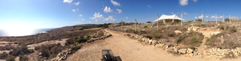
Figure 1: Panoramic view of Ħaġar Qim (right) and Mnajdra (left) in their landscape. (040377)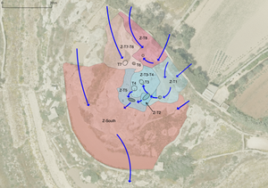
Figure 4: Overview of water flow zones and the associated tanks of the Il-Misqa site. (057395)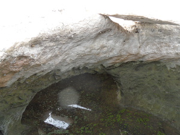
Figure 5: View from T3 into T4 showing the reflexion of the sky through the opening of T3. (042614)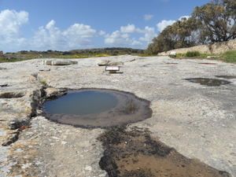
Figure 6: Illustration of the micro-topography of the site. In the foreground T1. In the background the slab of T3 (right) and the ones from T4 (left). (044435)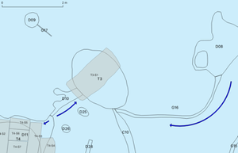
Figure 9: Features around T3. The flow arrows between T3 and T4 are surface flows. These tanks are connected below the surface. (057392)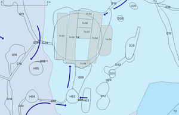
Figure 10: Features around T4 showing the “leakage” gutter G24. The flow arrows between T3 (top left) and T4 are surface flows. These tanks are connected below the surface. (057393)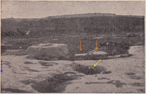
Figure 12: Zammit's photo of 1927 of T6 and T7. Orange arrows: the 2 blocks that have disappeared. Blue arrow: the missing hole H06. Yellow arrow: something in T6 that is not there anymore. (057387)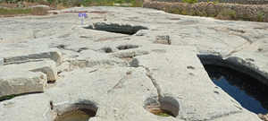
Figure 14: Picture from the same point as Ugolini's photo of 1937 (not reproduced here). (057086)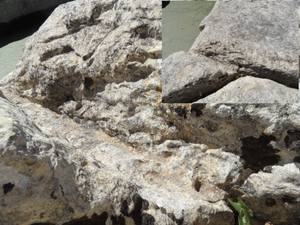
Figure 17: Top left T2. C09 (bottom) is joining C10. Notice the surface of C10 between T2 and the junction. Flow direction to the right. (057388)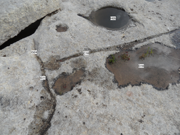
Figure 18: Leakage gutter G24 between the zones Z-T5 and Z-T3-T4. T4 is visible on the top left. (044464)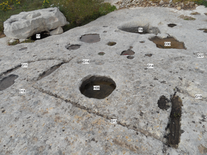
Figure 19: Central hole H06 surrounded by a U-shaped gutter G13. Possibly a bird trap. (044507)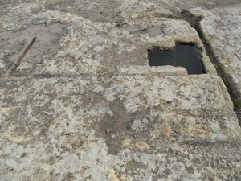
Figure 20: T-shaped hole surround by an U-shaped canal. In the SW of the plateau. Not surveyed. Possible bird trap. (042627)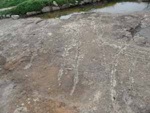
Figure 21: Example of a group of gutters in Z-South (non surveyed). Possibly for stimulating root development to the depression in the top and right. (042623)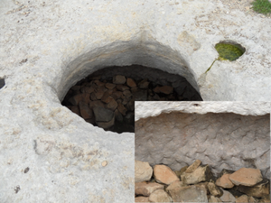
Figure 24: T6. Smoothness of the top border of the tank compared with the tool marks in the widening part (057397)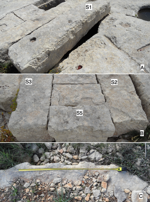
Figure 27: T4, half wedge holes on the slabs. A 5.5 holes on S1 ; B one hole on S5 and two on S3 ; C for comparison HQMA-1015 in the area between Ħaġar Qim and Mnajdra.(057404)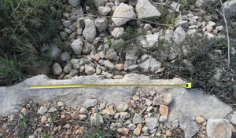
Figure 27 C: HQMA-1015 in the area between Ħaġar Qim and Mnajdra, 3 half wedge holes. (041857)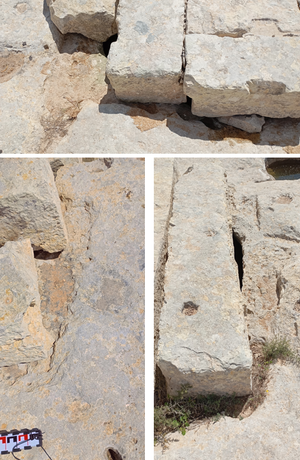
Figure 28: T4, D11 below the slabs showing the original space prepared for the slabs. A: north-east corner ; B: south-west corner ; C: west side. (057401)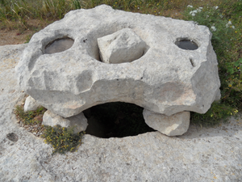
Figure 30: T7 cover slab (T7-S1) resting on blocks, the central hole with its plug and the tool marks on the south-eastern side (044496)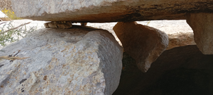
Figure 31: T7. Slab S1 resting on some small stones to calibrate the horizontality of the slab. (057250)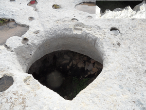
Figure 32: T6 border features. Inset: detail of possible rope wear gutters (044494, 044607). (057399)
Figure 33: Wied Ħoxt. View upstream. At the very visible end the two cross-valley terraces are visible. (057719)
Figure 34: Wied Ħoxt. View downstream. The former source is at the blue arrow. The knickpoint is clearly visible. (057718)
Figure 35: Wied Iż-Zurrieq. View downstream from the road, looking south. The junction with the Wied Ħoxt is not visible but is located where the valley turns west and then east (approximately the middle of the picture). In the top right the small island of Filfla is visible. (057806)
Figure 36: Wied Ħoxt. Panoramic upstream view of two terrace walls across the valley forming a dam. Total hight approximately 4 meters (WH-1006). (057631)
Figure 37: Wied Ħoxt. Example of a small "modern" quarry (WH-1012) with a bore hole clearly visible. (057767)
Figure 39: Elevation profile of the Wied Ħoxt. The three abrupt changes in the inclination of the valley bottom (knickpoints) are indicated by the arrows. (057791)
Figure 40: Wied Ħoxt catchment area of the head of the valley, Il-Maqluba,the Mqabba-Iż-Żurrieq perched aquifer, the former source WH-1011 and the Wied Babu. (057790)
Figure 43: Dry stone wall at the departure of the Wied Ħoxt. To the left and in the middle two perpendicular blocks sticking out of the wall - header-stretcher technique. View direction upstream. WH-1000 wall, WH-1005 megaliths. (041602)
Figure 47: View downstream of the Wied Ħoxt showing the transverse megalith (WH-1002), the chaotic section behind it and in the top right the dolmen-like structure (WH-1003). (041592)
Figure 49: Wied Ħoxt. View downstream from the transverse megalith showing the desolated state in 2025 after after the ground works. Compare with figure 47 from 2016. The big block on the right seems to be the capstone of the possible dolmen. (057649)
Figure 50: View from the right bank on the crossing (WH-1004) in the Wied Ħoxt. The right side of the picture is downstream (043880)
Figure 51: View upstream of the crossing from the left bank. In the middle a block with cut marks can be seen. The insert shows details of the marks. In the back the dolmen-like structure (WH-1003) is visible. (057398)
Figure 51 Base: View upstream of the crossing from the left bank. In the middle a block with cut marks can be seen. In the back the dolmen-like structure (WH-1003) is visible. (043887)